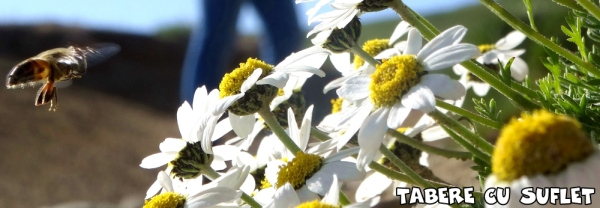

 "Din punct de vedere aerodinamic, bondarul nu poate sa zboare. Doar ca bondarul nu stie acest detaliu:)"
"Din punct de vedere aerodinamic, bondarul nu poate sa zboare. Doar ca bondarul nu stie acest detaliu:)"
otanica este stiinta care studiaza organismelor vegetale. Denumirea ei vine din limba greaca, Botani insemnand iarba in aceasta limba. Botanica se ocupă cu studiul plantelor din punct de vedere anatomic, morfologic, fiziologic, clasificarea (taxonomia), originea și evoluția plantelor.
Până în prezent au fost descrise peste 500.000 de specii de plante, care, atât pentru studiile specialiștilor, cât și pentru informarea marelui public, au trebuit sa fie clasificate și denumite. Părintele acestei științe este considerat învățatul grec Teofrast (372 î.Hr.–287 î.Hr.), discipol al lui Aristotel.
Zoologia este ramura biologiei care se ocupă cu studiul organismelor incadrate în regnul Animalia. Termenul provine de la cuvintele grecești zoon = animal și logos = stiinta. Zoologia studiază structura, funcțiile, comportarea, dezvoltarea, filogenia, clasificarea, distribuirea, și utilizarea animalelor.
Aristotel este considerat parintele zoologiei. In lucrarea sa Istoria animalelor, el a descris peste 500 specii de animale. Se spune că Alexandru Macedon, fostul sau elev, îi trimitea din expediții diferite specii de animale orientale, pentru a fi studiate. El a introdus un prim sistem de clasificare a animalelor, functie de sange.
Ecologia este o ramura a biologiei ce studiază interacțiunea dintre organisme, plante și mediul în care ele trăiesc. Termenul vine de la cuvintele grecești ecos - casă și logos - știință, fiind "știința studierii habitatului".
Primul savant care a reliefat principiul interacțiunii în lumea vie a fost Charles Darwin. El a observat că diferitele specii se influențează reciproc prin activitățile lor și că de aceste interacțiuni reciproce depinde succesul unei specii în lupta pentru existență. Ideile lui Darwin au fost dezvoltate de zoologul Ernst Haeckel care a formulat termenul de ecologie în anul 1866. Ecologia după Ernst Heinrich Haeckel este ”Studiul interacțiunilor dintre organismele vii și ambient și organismele vii între ele în condiții naturale”.
Cu timpul, în a doua jumătate a sec. XX, prin conștientizarea importanța condițiilor de mediu, semnificația termenului ecologie s-a lărgit peste sensul restrâns din domeniul biologiei, devenind și un sinonim pentru ideea de protecție a mediului înconjurător.
Pentru Asociatia noastra este un aspect foarte important, căci 90% din activitatile noastre se desfasoara in aer liber si multe sunt dependente de elemente sensibile la schimbarile climaterice, cum ar fi lipsa zapezii spre exemplu. De aceea, inca de la inceput, Spiritul Eco face parte dintre Valorile noastre esentiale.
Biologia Marina sau oceanografia, este o ramură a biologiei care se ocupă cu studiul vieții în bazinele oceanice. Sunt studiate aspecte precum diversitatea viețuitoarelor marine, adaptarea și evolutia lor, productivitatea biologică a cestora, precum si gasire de solutii pentru prezervarea biodiversitatii marine.
Scufundarile fiind un hobby foarte pretuit in Tabere cu Suflet, membrii Asociatiei s-au implicat activ de-a lungul timpului, in diferite actiuni de curatare a coralilor sau chiar de relocare a acestora si a altor specii afectate de diferite constructii.
Afla mai multe